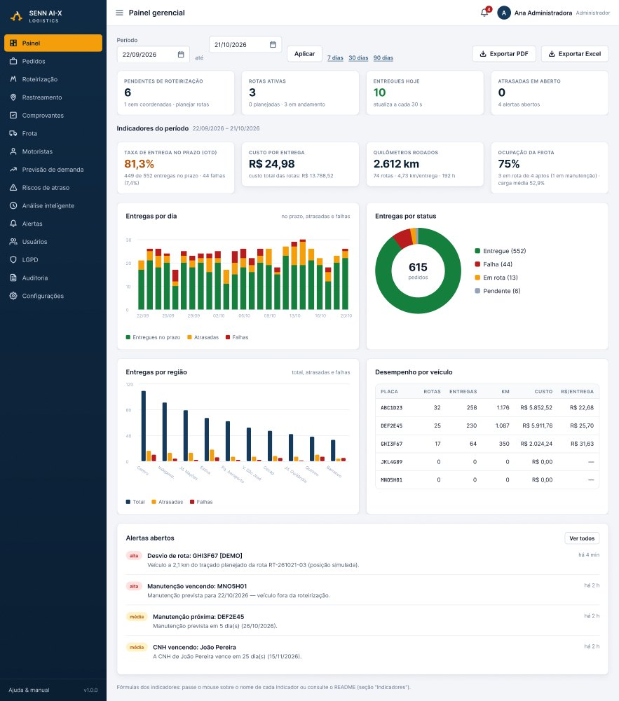
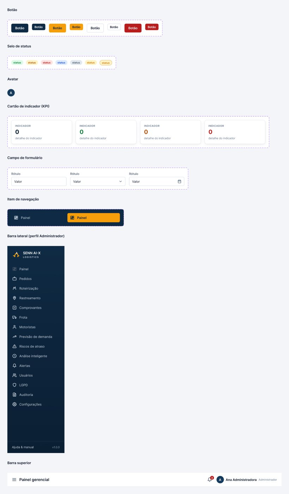
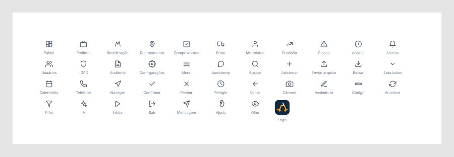

Situação em 21/10/2026: os fundamentos, os componentes e as telas de Login e Painel gerencial estão prontos no Figma. As demais telas aguardam a renovação da cota de chamadas do Figma (o plano Starter com assento View permite 20 chamadas por mês ao servidor MCP). Enquanto isso, as 14 telas estão disponíveis como protótipos HTML navegáveis, com os mesmos tokens e componentes.
02 · Painel gerencial
A tela é montada com os componentes Barra lateral, Barra superior, Campo, Botão, Cartão KPI, Selo e Item de alerta, e todos os gráficos usam os tokens de cor.

Componentes e ícones
Os componentes têm variantes e propriedades de texto, de visibilidade e de troca de ícone, e estão ligados às variáveis da coleção SENN AI-X Tokens.


Telas previstas
| # | Tela | Situação |
|---|---|---|
| 01 | Login | Pronta no Figma |
| 02 | Painel gerencial | Pronta no Figma |
| 03–11 | Pedidos, Importar CSV, Planejar rotas, Rastreamento, Previsão, Riscos, Alertas, Análise + assistente, Frota | Protótipo HTML Figma: aguardando cota |
| M1–M3 | App do motorista: minhas rotas, rota, registrar entrega | Protótipo HTML Figma: aguardando cota |